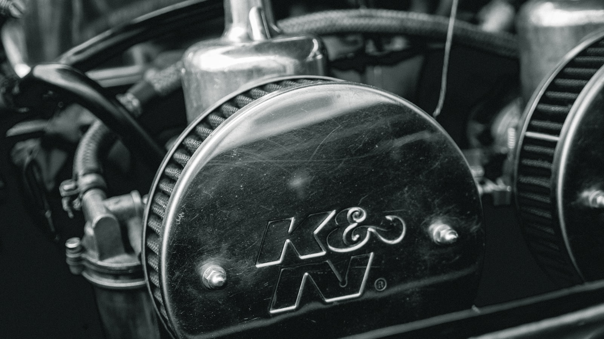
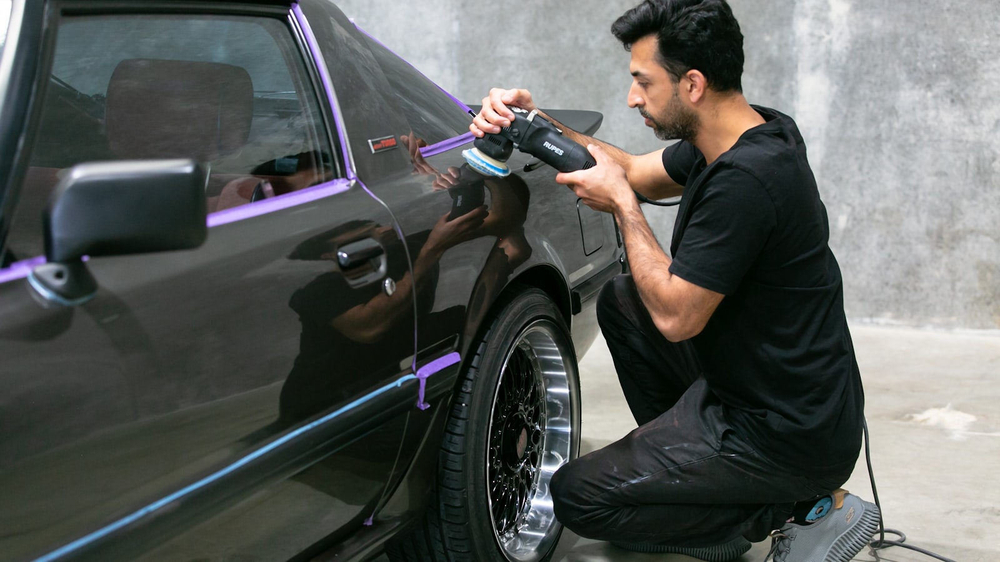
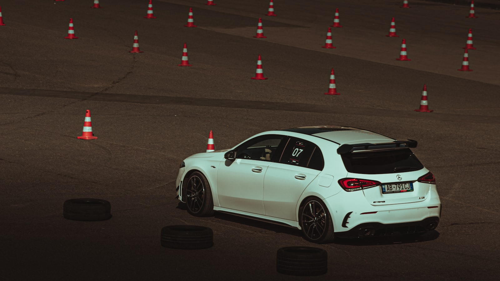
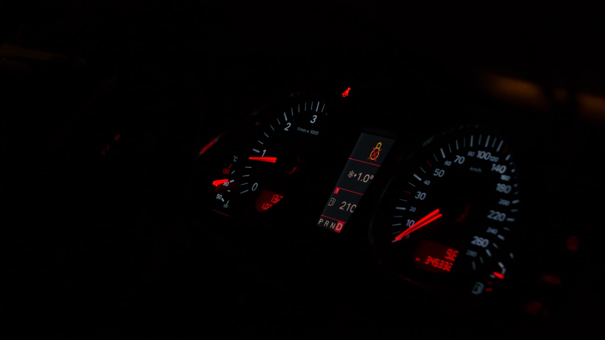
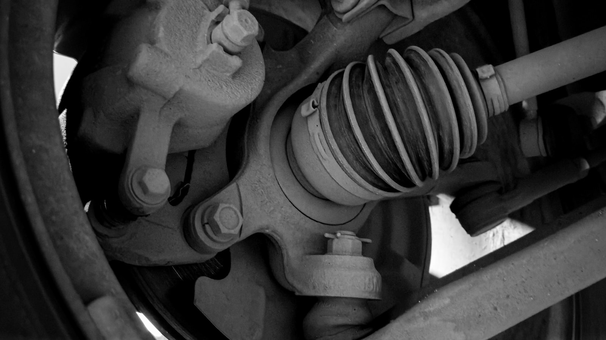
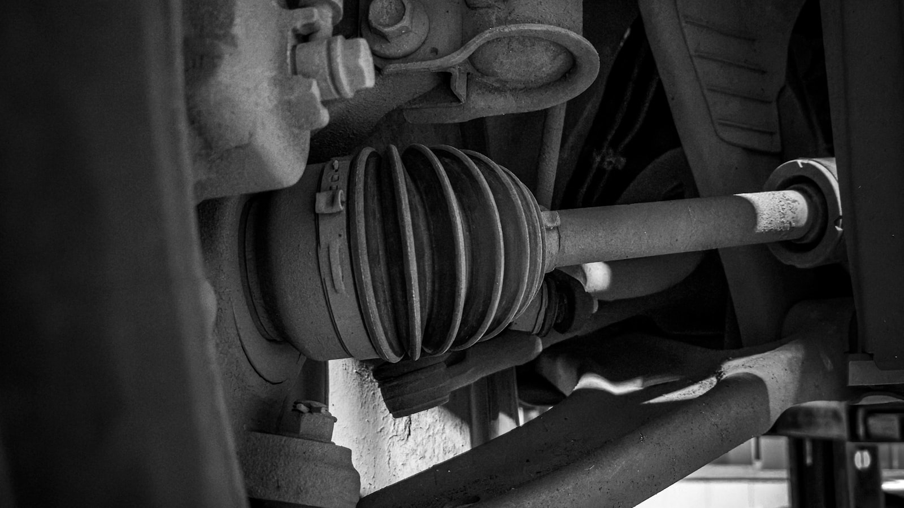
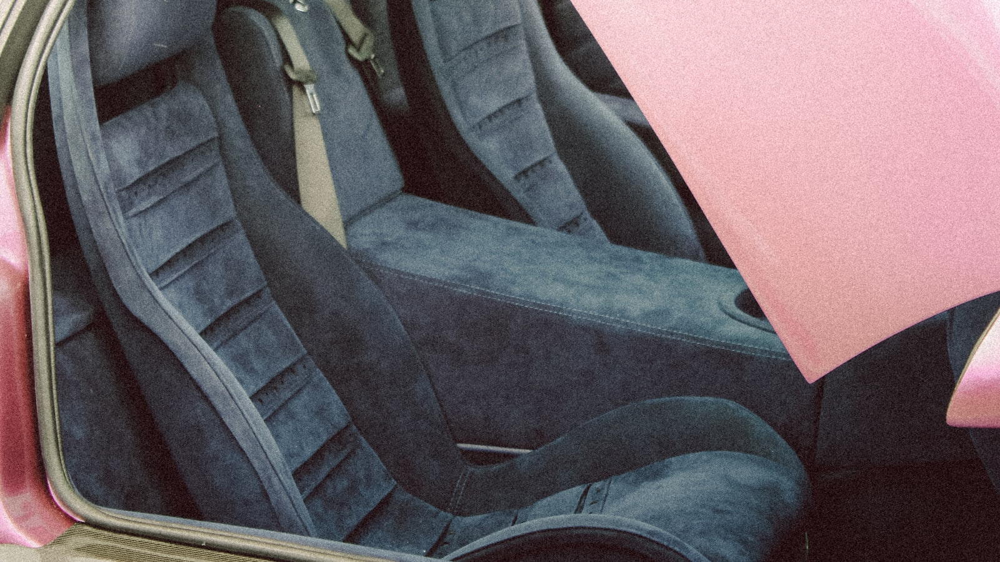
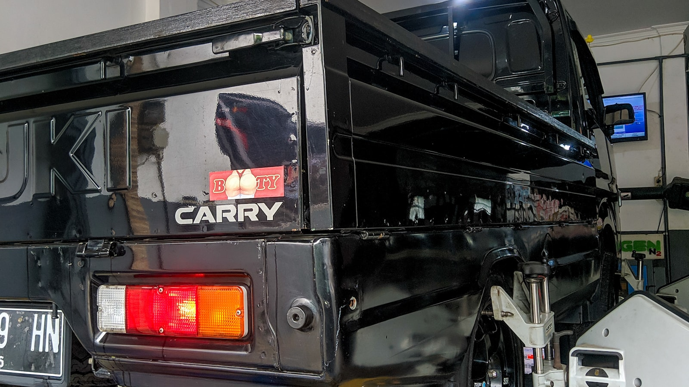

Hizmet Kapsamı
Detaylı ve Eğitici Oto Ekspertiz Hizmetleri
Lüleburgaz Oto Ekspertiz, araca dair tüm kritik noktaları ileri teknoloji ekipmanlarla ölçerek karar sürecinizi netleştirir. Her hizmet, güvenli alım için stratejik bir veridir.
Motor Ekspertizi
Motor, aracın kalbidir ve en büyük maliyetleri barındırır. Motor ekspertizi sırasında yağ kaçakları, soğutma sistemi, yanma verimi ve genel çalışma stabilitesi ölçülür.
Kompresyon değerleri, motor sesi ve titreşim analizi ile olası arızalar önceden tespit edilir. Bu analiz, satın alma sonrası sürpriz maliyetleri önlemenizi sağlar.
Kaporta & Boya Analizi
Kaporta ve boya analizi, aracın geçirdiği kazaları ve onarımları ortaya çıkarır. Boya kalınlık ölçümleri ile lokal boyama ve değişen parçalar belirlenir.
Şasi ve şase bağlantı noktaları kontrol edilerek güvenlik riskleri analiz edilir. Bu sayede aracın gerçek değerini doğru şekilde hesaplamak mümkün olur.
Dyno Performans Testi
Dyno testi, aracın beygir gücü ve tork değerlerini gerçek sürüş koşullarına yakın bir ortamda ölçer. Fabrika değerlerinden sapma, performans kaybı veya gizli sorunları işaret edebilir.
Özellikle turbo veya modifiye araçlarda güç kaybı, yakıt verimsizliği ve mekanik sorunlar dyno ile net şekilde ortaya konur.
OBD Elektronik Tarama
OBD taraması, aracın elektronik kontrol ünitelerindeki arıza kodlarını tespit eder. ABS, ESP, motor kontrol, airbag ve şanzıman gibi kritik sistemler analiz edilir.
Geçmişte silinmiş arıza kodları veya gizli elektriksel sorunlar bu test ile görünür hale gelir, böylece riskli araçlardan uzak durabilirsiniz.
Fren Testi
Fren sistemi, güvenli sürüşün temelidir. Fren testinde disk, balata, hidrolik sistem ve fren performansı ölçümlenerek yol güvenliği değerlendirilir.
Dengesiz frenleme veya zayıf fren gücü, potansiyel riskleri işaret eder. Bu test ile gerçek fren performansını net olarak görürsünüz.
Süspansiyon Testi
Süspansiyon sistemi, konfor ve yol tutuş dengesini sağlar. Amortisör ve süspansiyon bileşenleri kontrol edilerek titreşim ve dengesizlikler ölçülür.
Aşınmış parçalar, direksiyon hakimiyetini ve frenleme mesafesini doğrudan etkiler. Bu test, uzun vadeli sürüş güvenliği açısından kritik öneme sahiptir.
Airbag Kontrolü
Airbag sistemi, kaza anında hayat kurtaran en önemli güvenlik ekipmanıdır. Kontrollerde sensör, modül ve sistem bütünlüğü analiz edilir.
Daha önce airbag açılmış araçlarda yapılan onarım işlemleri bu test ile anlaşılır. Güvenli bir sürüş için airbag sisteminin sağlam olduğundan emin olmak gerekir.
Yanal Kayma Testi
Yanal kayma testi, aracın direksiyon dengesi ve yol tutuşunu ölçer. Rot, balans ve şasi dengesi bu testte analiz edilir.
Yüksek yanal kayma değerleri, sürüş sırasında kontrol kaybına neden olabilir. Bu test, özellikle şehirlerarası kullanım için kritik veriler sağlar.